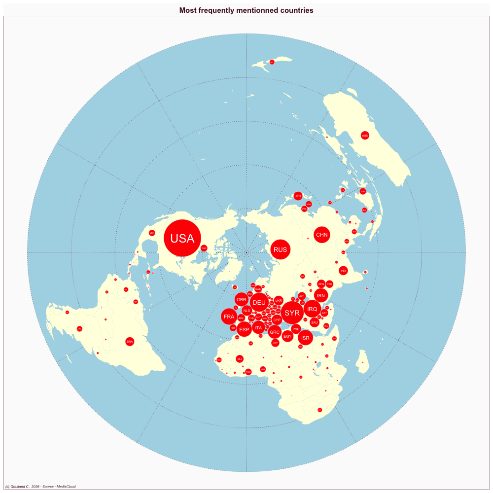

Turkey
- Website : daily sabah
Scale
- Global
- National
Topics
- General news
- Political news
- Economic news
Publications
Panayırcı UC, İşeri E, Şekercioğlu E. 2016. Political agency of news outlets in a polarized media system: Framing the corruption probe in turkey. European Journal of Communication 31: 551–567